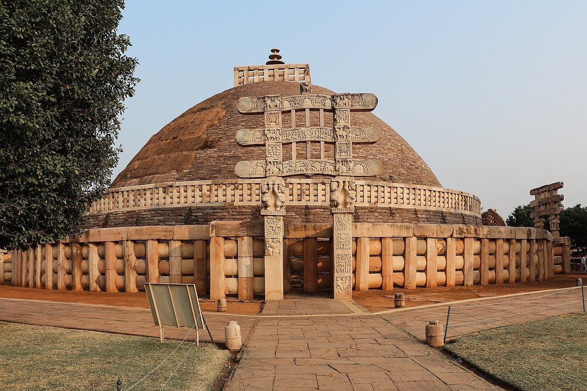
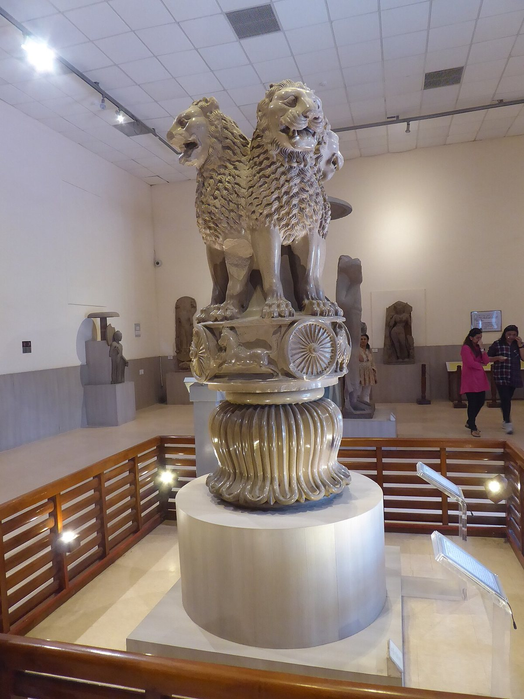
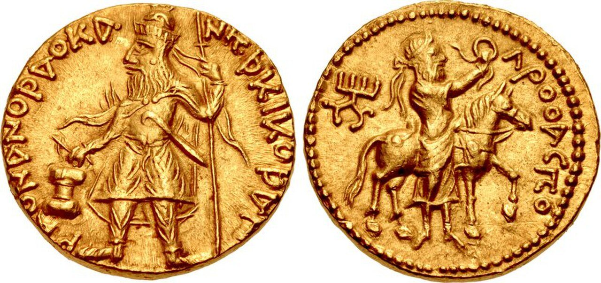
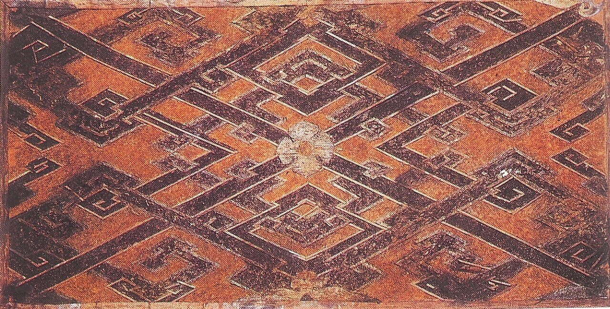

사진 · 산치 대탑
중학교 역사① · 2단원 문명의 발생과 고대 세계의 형성
탑인도의 종교와 유라시아 교류
산치 대탑 · 사진 Bernard Gagnon · CC BY-SA 3.0
“생각과 물건은 어떻게
생각과 물건은 어떻게
먼 길을 건넜을까?
사실인도에서 생긴 불교
해석어떻게 동아시아까지 왔을까
확장길 위에서 무엇이 바뀌었을까
태어나면 정해지는 자리?
브라만제사장
크샤트리아왕족·무사
바이샤농민·상인
수드라노예·하층민
고통에서
벗어나는 길
사실석가모니의 가르침
해석누구나 깨달을 수 있다
확장신분 질서와 부딪쳤을까

사진 · 전쟁을
후회한 왕?
전쟁을
후회한 왕?
누가마우리아 왕조의 아소카 왕
어디에바위와 돌기둥에 새긴 글
사실·주장정말 후회했을까
아소카 사자 기둥머리 · 사르나트 박물관 · 사진 lisa bat · CC BY 2.0
사진 · 전파
전파아소카는 사방에 사절을 보냈다
산치 대탑 · 사진 Bernard Gagnon · CC BY-SA 3.0

사진 · 동전 하나에
몇 나라가 담겼을까?
동전 하나에
몇 나라가 담겼을까?
사실쿠샨 왕조 카니슈카의 금화
해석그리스 글자, 여러 나라의 신
확장왕은 누구에게 보여 주려 했나
카니슈카 1세의 금화(쿠샨 왕조) · CC BY-SA 2.5

사진 · 부처님이 왜
그리스 조각을 닮았을까?
부처님이 왜
그리스 조각을 닮았을까?
사실곱슬머리, 깊은 옷 주름
해석헬레니즘과 불교가 만나다
확장3차시 알렉산드로스와 잇기
간다라 불상 · 도쿄국립박물관 · 퍼블릭 도메인

사진 · 비단 한 필이
로마까지 가면?
비단 한 필이
로마까지 가면?
사실장안에서 로마까지
해석수많은 중간 상인
확장‘비단길’이라는 이름은 누가 붙였나
서한 시대의 비단 · 퍼블릭 도메인
길 위로 오간 것
비단동 → 서
유리·금은서 → 동
말·포도서역 → 중국
불교인도 → 중국
372
사실고구려에 불교가 들어오다
해석인도에서 한반도까지 수백 년
확장오늘 우리 동네의 절
“생각과 물건이 먼 길을 건넌 힘은 이었다.